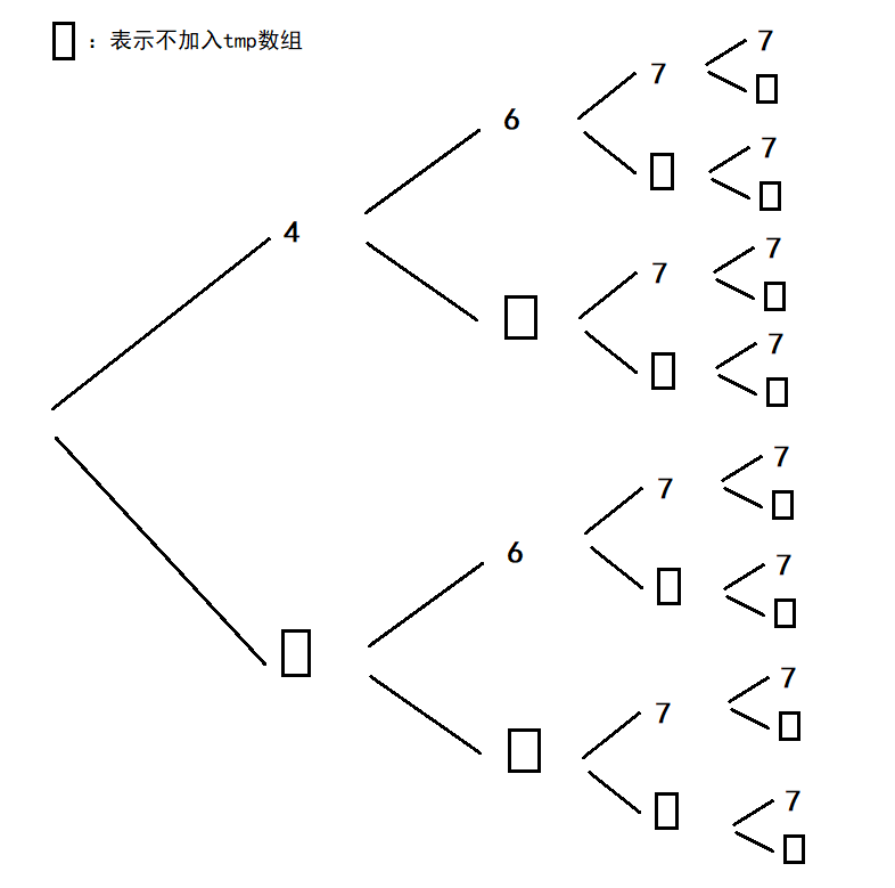
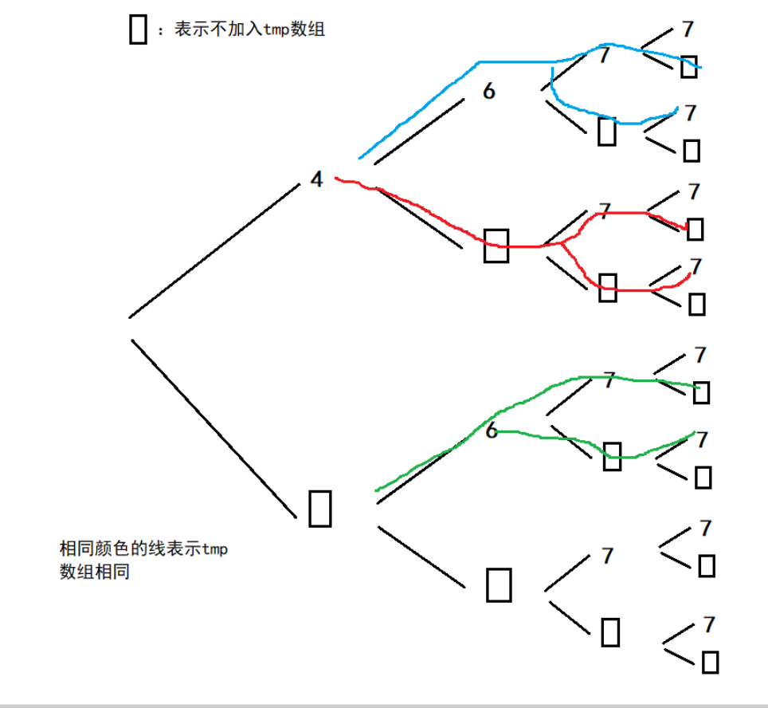

leetcode 491 递增子序列，涉及算法：DFS、剪纸
题目描述
给定一个整型数组, 你的任务是找到所有该数组的递增子序列，递增子序列的长度至少是2。
示例:
输入: [4, 6, 7, 7]
输出: [[4, 6], [4, 7], [4, 6, 7], [4, 6, 7, 7], [6, 7], [6, 7, 7], [7,7], [4,7,7]]
|
说明:
- 给定数组的长度不会超过15。
- 数组中的整数范围是 [-100,100]。
- 给定数组中可能包含重复数字，相等的数字应该被视为递增的一种情况。
解题思路
遍历nums数组的每一个元素，每个元素都有两个选择，要么加入tmp数组，要么不加。
遍历完nums数组后，如果tmp数组的大小大于等于2，那么tmp数组就是返回的一部分。
可以用一个横向二叉树来表示这一过程

但是这样子会出现一个问题，有重复的tmp,如下图，相同颜色线的就是重复值

所以得去重
观察发现有重复得树枝都是在相邻的元素是相同的这种情况，于是我们可以这么做：
如果 tmp 不为空，且当前元素和 tmp 中的最后一个元素相等，我们不考虑不将当前元素加入 tmp 中这一分支。
注意这个去重是在当前元素加入tmp数组后又返回才判断的。
class Solution {
public:
vector<vector<int>> ret;
vector<vector<int>> findSubsequences(vector<int>& nums) {
vector<int> tmp;
dfs(nums,tmp,0);
return ret;
}
void dfs(vector<int>& nums,vector<int>& tmp,int index){
if(index>=nums.size()) {
if(tmp.size()>=2)
ret.push_back(tmp);
return;
}
if(tmp.empty()||nums[index]>=tmp.back()){
tmp.push_back(nums[index]);
dfs(nums,tmp,index+1);
tmp.pop_back();
}
if(index>0 && !tmp.empty() && nums[index]==tmp.back()) return;
dfs(nums,tmp,index+1);
}
};
|
参考
DFS-C++通俗易懂的解题思路